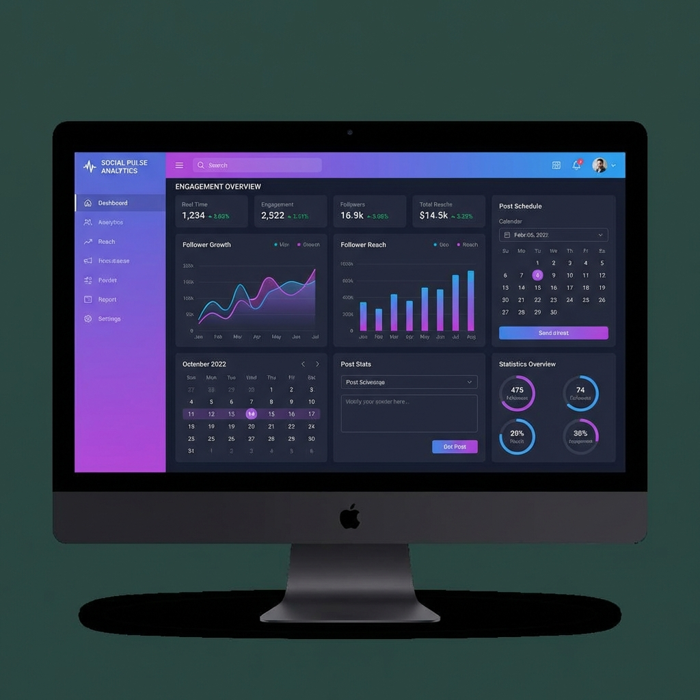

Social Media Dashboard
A comprehensive analytics dashboard for social media management — featuring multi-platform post scheduling, real-time engagement metrics, audience insights, and automated reporting to streamline social media strategy.

Project Overview
The vision behind this project
Mastering Social Media Strategy
The Social Media Dashboard was built to solve a critical pain point for marketers and businesses: managing multiple social media accounts from a single interface while gaining actionable insights from engagement data. Instead of jumping between platforms, users can monitor, schedule, and analyze their entire social presence from one dashboard.
The platform connects with major social media APIs to pull real-time metrics — follower growth, post engagement rates, reach, impressions, and audience demographics. A powerful scheduling engine allows users to plan and queue posts across multiple platforms simultaneously, with optimal posting time recommendations based on historical engagement patterns.
The analytics engine processes engagement data through Python-based statistical analysis, identifying content performance trends, audience behavior patterns, and growth opportunities. Automated weekly and monthly reports can be generated and exported as PDF or CSV, saving hours of manual reporting work.
Key Features
What makes this dashboard powerful
Real-Time Analytics
Live dashboards showing follower counts, engagement rates, post performance, reach, and impressions across all connected platforms with auto-refreshing widgets.
Post Scheduling
Visual calendar interface for scheduling posts across multiple platforms. Queue posts with media attachments, hashtags, and preview how they'll look before publishing.
Smart Recommendations
AI-powered suggestions for optimal posting times based on audience activity patterns, hashtag recommendations from trending topics, and content type performance analysis.
Audience Insights
Detailed audience demographics including age distribution, geographic breakdown, active hours, interest categories, and follower growth trends over customizable periods.
Automated Reports
Generate professional PDF and CSV reports with key metrics, charts, and insights. Schedule automated weekly or monthly reports delivered directly via email.
Multi-Platform Integration
Connect and manage accounts across major social platforms from a unified interface, with platform-specific formatting and character limit validation.
Tech Stack
Technologies powering this project
Python + Flask
Backend API with Flask framework, Celery for task scheduling, and pandas/numpy for data analysis
MongoDB
NoSQL database for flexible social media data storage with aggregation pipelines for analytics queries
React
Dynamic frontend with Redux for state management, Recharts for data visualization, and Material UI components
Celery + Redis
Distributed task queue for scheduled post publishing, data syncing, and report generation
Social Media APIs
Integration with platform APIs for data fetching, content publishing, and webhook-based real-time updates
Architecture & Approach
How this project was built
1. API Integration Layer
Built a unified API abstraction layer in Python that normalizes data from different social platform APIs into a consistent format. Each platform adapter handles authentication (OAuth2), rate limiting, pagination, and error handling independently.
2. Data Pipeline
Designed a data ingestion pipeline using Celery workers that periodically sync metrics from connected accounts. Raw data is processed, normalized, and stored in MongoDB with time-series collections for efficient historical queries.
3. Analytics Engine
Built a Python analytics module using pandas and numpy for statistical analysis — calculating engagement rates, growth velocities, content performance scores, and optimal posting time recommendations based on historical engagement patterns.
4. React Dashboard
Developed the frontend with React and Redux, featuring interactive Recharts visualizations, a drag-and-drop scheduling calendar, real-time WebSocket updates for live metrics, and responsive design for tablet use.
5. Scheduling & Automation
Implemented a robust post scheduling system using Celery Beat for cron-like scheduling. Posts are queued with platform-specific formatting, media handling, and retry logic for failed publications with notification alerts.
Challenges & Solutions
Problems I solved along the way
API Rate Limits Across Platforms
Each social platform has different rate limits, authentication flows, and data formats. Managing concurrent API calls across accounts without hitting limits required careful orchestration.
Implemented a token bucket rate limiter per platform with request queuing. Built an adaptive backoff system that detects approaching limits and automatically throttles requests, with priority queuing for user-initiated actions.
Real-Time Dashboard Performance
Displaying real-time metrics across multiple accounts with frequent chart updates was causing performance issues — high CPU usage from chart re-renders and excessive WebSocket messages.
Implemented data batching on the server side (aggregate updates over 5-second windows), used React.memo and useMemo for chart memoization, and added a smart diffing algorithm that only pushes changed metrics via WebSocket.